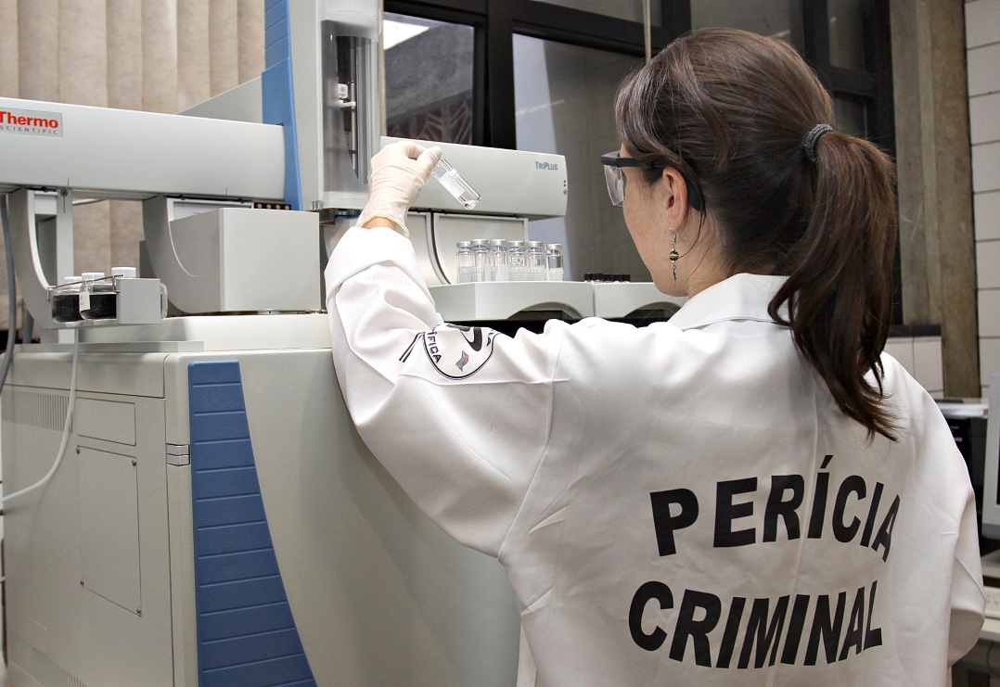

Identificação Criminal
Serviços especializados em análise de impressões digitais, palmares e plantares, com equipamentos de última geração para identificação precisa de indivíduos.
- Comparação de impressões digitais
- Levantamento de impressões latentes
- Análise de impressões em superfícies complexas
- Laudos periciais para processos judiciais

Química Forense
Análise de materiais e substâncias encontradas em cenas de crime, com metodologias validadas cientificamente e equipamentos de alta precisão.
- Análise de drogas ilícitas
- Identificação de substâncias desconhecidas
- Exame de resíduos de explosivos
- Análise toxicológica
- Perícia em incêndios criminosos
Perícia Digital
Recuperação e análise de evidências digitais em dispositivos eletrônicos, essencial para crimes cibernéticos e investigações modernas.
- Recuperação de dados apagados
- Análise de dispositivos móveis
- Rastreamento de atividades digitais
- Perícia em redes sociais
- Identificação de autoria de conteúdos digitais

Documentoscopia
Exame técnico de documentos para verificação de autenticidade, identificação de falsificações e determinação de autoria.
- Análise de assinaturas
- Verificação de autenticidade de documentos
- Identificação de adulterações
- Datação de documentos
- Análise de instrumentos escritores